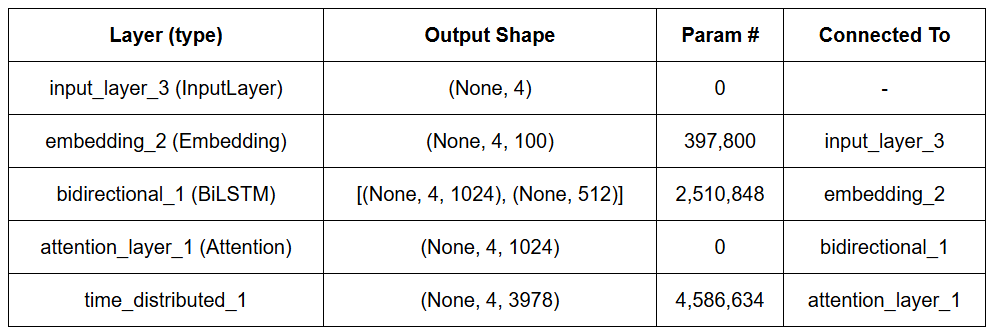

Seq2Seq models are designed for tasks that require mapping one sequence (input) to another (output), such as machine translation, text summarization, or your morphological generator project.
It consists of:
BiLSTM Encoder
Why BiLSTM?
BiLSTM is considered an improvement over the standard unidirectional LSTM for several reasons:
- Captures Full Context: BiLSTM processes data in both directions, enabling the model to learn context from both past and future time steps.
- Improved Performance: By considering both forward and backward context, BiLSTMs generally outperform unidirectional LSTMs in sequence-based tasks like machine translation and speech recognition.
- Flexible in Sequence Processing: Useful for tasks where the output depends on both past and future elements of the sequence.
How BiLSTM works?
In BiLSTM, two LSTMs are used: one processes the sequence from left to right, while the other processes it from right to left. The output from both LSTMs is combined.
Mathematical Equations
For both forward and backward LSTMs, we use the following standard equations:
Forget Gate (\( f_t \)):
\[
f_t = \sigma(W_f \cdot [h_{t-1}, x_t] + b_f)
\]
Input Gate (\( i_t \)):
\[
i_t = \sigma(W_i \cdot [h_{t-1}, x_t] + b_i)
\]
Cell Candidate (\( \tilde{C}_t \)):
\[
\tilde{C}_t = \tanh(W_C \cdot [h_{t-1}, x_t] + b_C)
\]
Cell State (\( C_t \)):
\[
C_t = f_t * C_{t-1} + i_t * \tilde{C}_t
\]
Output Gate (\( o_t \)):
\[
o_t = \sigma(W_o \cdot [h_{t-1}, x_t] + b_o)
\]
Hidden State (\( h_t \)):
\[
h_t = o_t * \tanh(C_t)
\]
BiLSTM Architecture
The BiLSTM architecture involves two LSTM layers, one for the forward pass and another for the backward pass. The outputs of both layers are combined (usually concatenated).
- Forward LSTM: Processes the sequence in a left-to-right manner.
- Backward LSTM: Processes the sequence in a right-to-left manner.
- Final Output: The outputs from both LSTM layers are concatenated to produce a richer representation for each time step.

Attention Mechanism and Decoder
Attention Mechanism
The attention mechanism enables the decoder to focus on the most relevant parts of the input sequence while generating each element of the output sequence.
Instead of relying solely on the last hidden state of the encoder, attention computes a weighted combination of all encoder outputs.
Mathematical Explanation
The attention mechanism can be summarized by the following steps:
Compute Alignment Scores:
The alignment score measures how well the decoder's current hidden state (\( h_t^{dec} \)) aligns with each encoder output (\( h_i^{enc} \)).
\[
score(h_t^{dec}, h_i^{enc}) = h_t^{dec} \cdot h_i^{enc}
\]
This can be generalized to:
\[
score(h_t^{dec}, h_i^{enc}) = \text{tanh}(W_a [h_t^{dec}; h_i^{enc}] + b_a)
\]
Compute Attention Weights:
The attention weights (\( \alpha_{t,i} \)) are obtained by normalizing the scores using a softmax function:
\[
\alpha_{t,i} = \frac{\exp(score(h_t^{dec}, h_i^{enc}))}{\sum_{j} \exp(score(h_t^{dec}, h_j^{enc}))}
\]
Compute the Context Vector:
The context vector (\( c_t \)) is computed as a weighted sum of the encoder's outputs:
\[
c_t = \sum_{i} \alpha_{t,i} h_i^{enc}
\]
Combine Context Vector with Decoder State:
The context vector is concatenated with the decoder's current hidden state to influence the next prediction.
Decoder
The decoder generates the target sequence one token at a time. It uses its previous output, the hidden state, and the context vector from the attention mechanism.
Mathematical Explanation
Input Embedding:
The input token (\( y_{t-1} \)) is embedded using an embedding layer:
\[
e_{t-1} = \text{Embedding}(y_{t-1})
\]
LSTM Update:
The decoder's LSTM processes the embedding and previous hidden states (\( h_{t-1}^{dec}, C_{t-1}^{dec} \)):
\[
h_t^{dec}, C_t^{dec} = \text{LSTM}(e_{t-1}, [h_{t-1}^{dec}, C_{t-1}^{dec}])
\]
Final Prediction:
The decoder combines the current hidden state (\( h_t^{dec} \)) and the context vector (\( c_t \)) to predict the next token:
\[
p(y_t | y_{t-1}, x) = \text{Softmax}(W_o [h_t^{dec}; c_t] + b_o)
\]
Architecture Overview
The overall decoder with attention mechanism integrates the following steps:
- Generate embeddings for the previous target token.
- Update the hidden state using the LSTM cell.
- Calculate attention weights and the context vector.
- Combine the context vector with the decoder's hidden state to produce the output probability distribution.
Why Attention Mechanism is Useful
The attention mechanism provides several benefits:
- Dynamic Focus: Allows the model to dynamically focus on different parts of the input sequence for each output token.
- Improved Long-Distance Dependencies: Helps mitigate the limitations of traditional RNNs by focusing on the relevant parts of long input sequences.
- Better Interpretability: Attention weights can be visualized to understand which input tokens the model considers important for generating each output token.